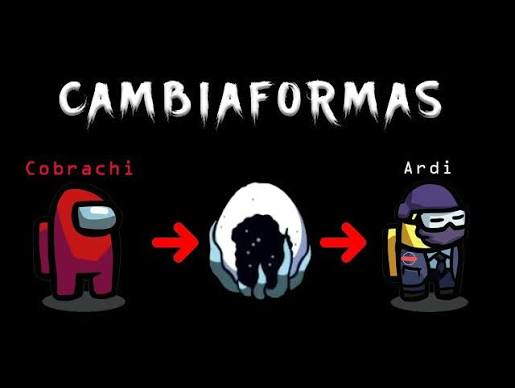

1. Fisiología Parasitaria y Plasticidad Celular
Introducido oficialmente en la actualización histórica v2021.11.09 de Innersloth, el Cambiaformas (denominado originariamente Shapeshifter) constituye la cúspide de la adaptabilidad biológica de la especie parasitaria. A diferencia del impostor común, cuya morfología exterior permanece anclada al disfraz de un traje espacial estándar adoptado tras la asimilación del huésped original, el Cambiaformas posee una masa celular pluripotente y tejidos metamórficos hiperflexibles capaces de reconfigurarse en tiempo real a nivel molecular.
Esta plasticidad orgánica le otorga la potestad de copiar de manera idéntica el fenotipo visual de cualquier tripulante vivo presente a bordo de la instalación estelar: su color cromático de traje, cosméticos capilares, sombreros conmemorativos, visores tácticos e incluso las mascotas sintéticas que acompañan al tripulante suplantado. En términos de sociología de la mentira y teoría de la información, el Cambiaformas destruye la premisa de oro del testimonio presencial: el hecho incontrovertible de «yo vi al jugador azul cometer el homicidio» deja de ser una certeza judicial inapelable para convertirse en un terreno fértil de sospecha, duda razonable y falsas incriminaciones deliberadas.
Sin embargo, la transformación biológica impone un peaje termodinámico y cinético inevitable sobre el organismo del impostor. Para efectuar el cambio estructural, el individuo debe segregar una cápsula viscosa de ecdisis conocida como el capullo de muda o huevo de metamorfosis. Esta cáscara protectora se proyecta alrededor del atacante durante un lapso de 1.5 a 3 segundos, emitiendo una animación visual inconfundible y un crujido orgánico gelatinoso que delata de forma irrebatible la presencia de la aberración si un tripulante se encuentra en el mismo radio de visión directa.
2. Arquitectura de Mecánicas: Parámetros del Huésped
La efectividad táctica del Cambiaformas en partidas competitivas se halla estrechamente calibrada por las directrices de la sala del anfitrión, las cuales modulan la tensión psicológica entre el atacante y los investigadores:
2.1. Menú de Clonación Celular [Mimetismo Activo]
Despliega una interfaz holográfica radial interactiva con las siluetas de todos los tripulantes vivos presentes a bordo. Al pulsar sobre un blanco determinado, el Cambiaformas inicia el ciclo de metamorfosis biológica (Tiempo de Transformación: 1.5 Segundos). Esta facultad exige un aislamiento absoluto previo, pues quedar atrapado dentro del capullo ante la mirada de un testigo anula por completo la ventaja del anonimato.
2.2. Duración de la Apariencia Copiada [Ventana Temporal]
Define el período continuo durante el cual el impostor retiene la identidad falsificada antes de que su organismo sufra agotamiento citoplasmático y revierta forzosamente a su forma original (Rango Configurable: 10 a 60 Segundos). El atacante debe sincronizar su desplazamiento, el asesinato y la huida dentro de este marco de tiempo estricto para evitar transformarse involuntariamente frente a un grupo.
2.3. Enfriamiento de Metamorfosis [Recarga Orgánica]
Representa la pausa fisiológica obligatoria requerida por el alienígena para reponer la masa hormonal antes de ejecutar un nuevo proceso de clonación celular (Tiempo de Recarga: 15 a 40 Segundos). Durante este lapso de enfriamiento, el Cambiaformas queda desprovisto de disfraces y debe operar con las precauciones ordinarias de un impostor clásico.
2.4. Evidencia Residual de Capullo de Muda [Rastro Forense]
Parámetro que determina si la cáscara residual del capullo permanece sobre el piso durante varios segundos tras completarse la muda celular (Persistencia en Suelo: 0 a 10 Segundos). Si la sala habilita este residuo, los investigadores pueden descubrir la piel viscosa abandonada en una habitación e inferir con rigor que un impostor disfrazado se encuentra actualmente rondando las inmediaciones.
3. Tácticas Avanzadas: El Arte de la Incriminación Falsa
El verdadero poder del Cambiaformas no reside en duplicar su velocidad de asesinato, sino en armar a la propia tripulación contra sus miembros más lúcidos y respetados. Una ejecución magistral de este rol requiere comprender la dinámica de los testimonios oculares:
3.1. El Robo de Coartada y el Falso Avistamiento
Identifica a dos tripulantes que se hayan desplazado en pareja demostrando mutua confianza (por ejemplo, Verde y Amarillo). Tras esperar a que se separen brevemente en los pasillos de Electricidad o Navegación, el Cambiaformas adopta la apariencia de Verde, busca a un tercer tripulante solitario (Blanco) a la vista de otros testigos y lo asesina a sangre fría frente a ellos antes de saltar por un conducto de ventilación. Cuando se descubra el cadáver, los testigos jurarán bajo juramento que Verde fue el ejecutor indiscutible, desatando una condena implacable en el botón de expulsión.
3.2. La Transformación en Punto Ciego
El mayor peligro al jugar como Cambiaformas es iniciar la mutación en un pasillo transitado. Los jugadores veteranos utilizan cámaras de seguridad o esquinas con doble escape (como el rincón superior de Motores Superiores o el fondo de Armería) para ingresar al capullo. Nunca actives la habilidad si el indicador de luz roja de las cámaras de vigilancia parpadea, a menos que planees inculpar al tripulante copiado justamente delante del lente para engañar al centinela de Seguridad.
3.3. Des-transformación Involuntaria y Trampas de Tiempo
Si el cronómetro de la transformación llega a cero mientras el asesino persigue a un grupo, el capullo volverá a brotar instantáneamente revelando su verdadero color delante de todos los presentes. Es imperativo calcular con precisión matemática la distancia hasta el conducto de escape antes de que expire el temporizador celular.
4. Detección Forense: Cómo Desacreditar al Impostor
Frente al Cambiaformas, los tripulantes deben abandonar el dogma del avistamiento simplista y adoptar protocolos forenses rigurosos:
- Verificación Cruzada de Tareas y Posición: Si un testigo acusa a Rojo de asesinar en Escudos, los demás miembros deben constatar de inmediato si Rojo estaba realizando una tarea visual verificable (como Vaciar Basura o Escaneo Médico) en el lado opuesto de la nave en ese mismo instante.
- Inspección de Restos de Capullo: Si se encuentra una piel gomosa translúcida abandonada en el suelo de una habitación, se confirma de manera definitiva que el Cambiaformas estuvo presente allí segundos antes y se encuentra merodeando bajo una piel prestada.
- La Paradoja del Doble Idéntico: Si dos jugadores con el mismo color y sombrero se cruzan en un pasillo, la tripulación debe pulsar la campana de emergencia al instante; uno de ellos es indefectiblemente el asesino alienígena intentando eludir sospechas.
- Monitoreo de Vitales por el Científico: Si el Científico observa en su tableta que una muerte ocurre exactamente mientras el sospechoso principal estaba frente a sus ojos reparando el reactor, el sospechoso queda absuelto y se expone la intervención del Cambiaformas.
5. Perfil Operativo y Parámetros Técnicos
Desde la perspectiva de diseño lúdico y balance de juego estandarizado, este personaje se caracteriza por los siguientes parámetros oficiales normados:
- Facción Asignada: Impostores (fuerza biológica parasitaria infiltrada).
- Especialidad Táctica: Metamorfosis, suplantación de identidades y guerra de desinformación.
- Poder Central: Clonación fenotípica instantánea de tripulantes vivos.
- Tiempo de Mutación: 1.5 Segundos dentro del capullo protector.
- Indicio Visual Primario: Cáscara residual de capullo viscoso en el suelo.
- Impacto Psicológico: Anulación de la certeza del testimonio presencial en deliberación.
- Nivel de Dificultad: Alta (exige control del tiempo de muda y conocimiento de rutas de escape).
6. Recursos Multimedia Obligatorios: Sonido y Vídeo
Efecto Sonoro de la Ecdisis Celular
Crujido viscoso característico emitido durante la eclosión del capullo metamórfico.
Secuencia Táctica del Cambiaformas
Demostración cinemática de la copia de identidad, asesinato por suplantación y huida por ducto.
7. Archivos Gráficos y Evidencias Visuales
